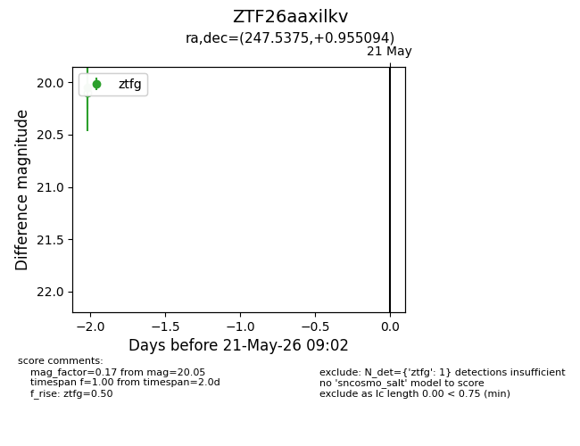
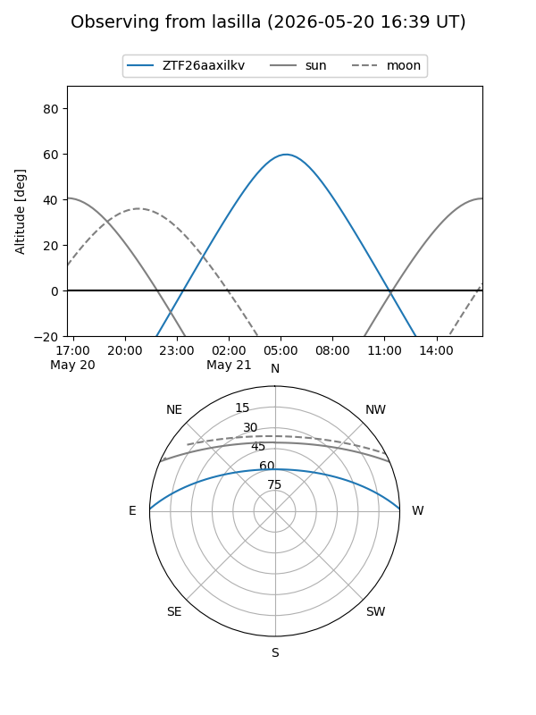
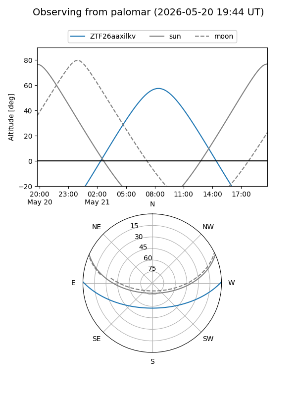

ZTF26aaxilkv
Target ZTF26aaxilkv at 2026-05-21 09:04
Aliases and brokers:
FINK: link
Lasair: link
ALeRCE: link
alt names
ZTF26aaxilkv (ztf,fink_ztf)
Coordinates:
equatorial (ra, dec) = 247.5375,+0.95509
equatorial (HMS+DMS) = 16:30:09.00,+00:57:18.34
galactic (l, b) = (15.9738,+31.47282)
Flags:
Photometry:
last ztfg=20.05
1 ztfg detections
Lightcurve

Visibility


Additional plots